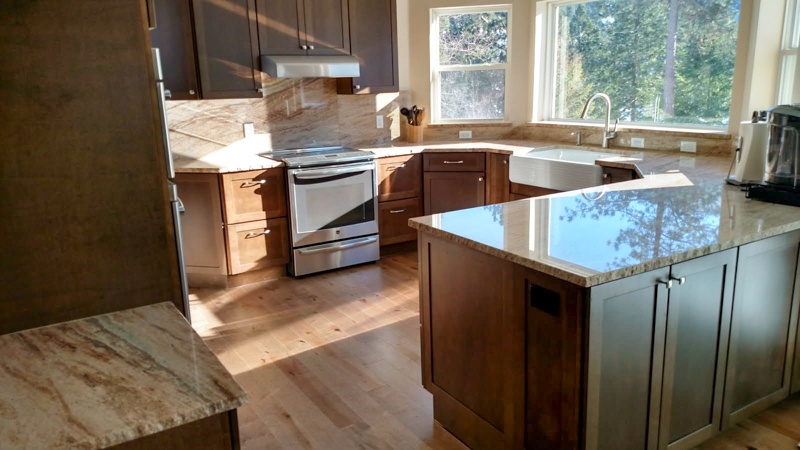

Family-Owned General Contractor
Custom cabinets, stone countertops, open layouts, and finishes built to last — kitchens designed around how Northern Idaho families actually cook and gather.
If your current kitchen is cramped, dated, or just fighting you every time you cook, it's time for a real change. Homeowners across Coeur d'Alene, Hayden, Post Falls, and Dalton Gardens trust Chuck and Norm Kile to rebuild their kitchens with honest craftsmanship and straightforward pricing.
From cosmetic refreshes to full gut remodels with new layouts, we handle every trade in-house or through a trusted crew of licensed pros. You get one accountable contractor — not a string of subs you have to chase — and a kitchen built to last decades.

One accountable general contractor handling every phase — design, demolition, trades, cabinets, stone, and finish work.
Work triangles, island planning, and material selection tailored to how you actually use the kitchen.
Careful removal of old cabinets, counters, and flooring — contained to the kitchen and hauled away.
Local cabinet shops we trust — stained, painted, inset, or shaker — built to the exact dimensions of your kitchen.
Quartz, granite, and natural stone fabrication and install by trusted Northern Idaho fabricators.
Tile, hardwood, engineered, laminate, or LVP — properly underlayed so it lasts decades, not a few years.
Relocated sinks, new circuits, under-cabinet lighting, and appliance hookups by licensed pros.
Opening the kitchen to the living area, removing load-bearing walls, or adding an island — engineered and permitted.
Trim, backsplash, paint, range hood, hardware — down to the last detail, reviewed with you at final walkthrough.
A clear, repeatable process keeps your remodel on schedule, on budget, and low-stress.
We visit your home, walk the kitchen, listen to your goals, and talk through what's possible.
Layout, cabinetry, and finishes finalized — with a clear, itemized written estimate. No surprises.
Permits pulled, demo, trades, cabinets, stone, finishes — managed by Chuck or Norm on-site.
Final inspection, punch list, and a clean handover of your new kitchen.
Chuck and Norm Kile have been remodeling kitchens across the Coeur d'Alene region for more than 30 years. We've built kitchens of every style and size — from historic downtown homes to lakefront new builds — and we know what layouts, cabinets, and finishes hold up to real Idaho family life.
We also know the ins and outs of local permitting and inspections on both sides of the state line. Kitchens involve plumbing, electrical, and often structural work, and getting each one right matters for safety and resale value. Bring us your ideas, Pinterest boards, or rough sketches — we'll help you scope it, price it, and build it.
Kile Construction is a full-service residential general contractor. From swapping out a countertop to rebuilding the entire floor plan, it's like having your own personal builder ready to customize your kitchen exactly to your liking.
Straight answers to what homeowners ask most before starting a kitchen remodel.
Call or message us anytime. We'll schedule a free on-site consultation and follow up with a written estimate.
Tell us a bit about your kitchen project and we'll be in touch within one business day.